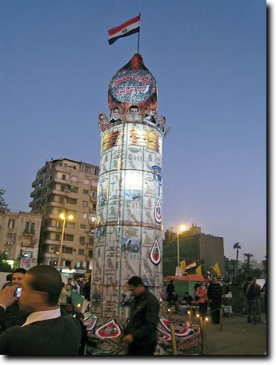

Notes on a visit to Egypt
Melanie Pitkin
(Powerhouse Museum/Macquarie University)
For the past 3 weeks I have been leading a tour group through Egypt for Alumni Travel in Sydney. Our travels took us from Cairo to Alexandria, El Alamein, Mersa Matrouh, Siwa Oasis, al-Faiyum, Minya, Amarna, Luxor, Edfu, Kom Ombo, Philae, Aswan and Abu Simbel. Having been in Egypt as an eyewitness to the Revolution a year earlier, and then being in Egypt again on the anniversary, it was interesting to observe how things have changed and how the situation is differently felt the further you move out of Cairo.
Midan Tahrir remains at the epicentre of the protests, with a satellite centre in Alexandria. Both cities have a permanent gathering point fuelled by banners, graffiti, resident (i.e. camped out) protestors and Revolution merchandise. On the anniversary date, we were in Siwa Oasis and it was easy to forget it was January 25. Life went on as normal, even though it was a public holiday, and there were few sentiments evoking the 2011 Revolution at all. Next day, however, we were back in Cairo and for me, it was an immediate case of deja vu. I went into the square that evening and it was full of people - protestors chanting slogans of disgust against the SCAF (Supreme Council of Armed Forces) that grew in momentum and suddenly dissolved again as another group emerged from the fringes; family and friends sharing food and listening to music and preachers on their loudspeakers and, later in the night, there was even a celebratory display of firecrackers and gunshots (this was also a popular way to celebrate the anniversary, as we later found out, in Minya). People also came to pay their respects to the victims of the earlier clashes. A large makeshift "obelisk" marked the spot for the names of the dead and wounded which served as a poignant reminder of the ongoing sacrifice and struggle of the Egyptian people for a democratic government. The backdrop to all this was a sea of red, black and white - flapping flags, scarves, armbands, T-shirts and face paint, an indicator for a new commercial enterprise amidst a lagging economy. [A set of photographs illustrating this is at the end of the article.]
Tourism around Cairo, Alexandria, Siwa, the Faiyum and Minya is thin and having met many local guides and tour operators in the past month, the story has now become a familiar one. There is barely any work and peoples' livelihoods are suffering because of it. I guess it would also come as no surprise then that these people are anti the Revolution. Last year, for example, our local guide complained of losing around US $12,000 in income and he has no work lined up in the coming months. Luxor, on the other hand, doesn't appear to have suffered too badly as large groups of Russians, Japanese, Germans and Americans, in particular, capitalize on the cheap package trips which includes a cruise down the Nile to Aswan. They can also bypass Cairo by flying directly into Luxor International airport. Having been spoilt with few crowds in Giza, Saqqara and other parts of Lower Egypt, we were then selfishly taken back when we had to queue at the Valley of the Kings and contend with a flotilla of cruise boats as we made our stops at Edfu, Kom Ombo and Philae! In contrast, our visit to Abu Simbel was a bit like stepping into a ghost town. We were the only guests staying at our gorgeous hotel, Seti First, and one of few foreigners to visit the temples of Ramesses II and Nefertari.
The situation now, in mid-February, from my point of view would appear to be a stable one. There are still some pockets of unrest in Cairo, but at no point did we feel like our safety was being compromised. If anything has been disruptive though, it's the apparently unexplainable fuel shortage which has been triggering road blocks and other protests all over the country. Our poor bus driver either joined a 6 hour queue overnight or was forced to track some down on the black market. Back in Cairo, there is a strong army presence around Garden City and Parliament House, of purely a preventative nature, and still protestors are camped out in Midan Tahrir (although there is a great sense of camaraderie as you wander through). In brief, however, there is no threat to foreigners. In fact, it's quite the opposite. Egyptians are doing all they can to protect visitors to encourage their return and I must say the tourist police did an admirable job escorting us at various points throughout our tour.

Unless otherwise indicated, © Nigel Strudwick 1994-2016